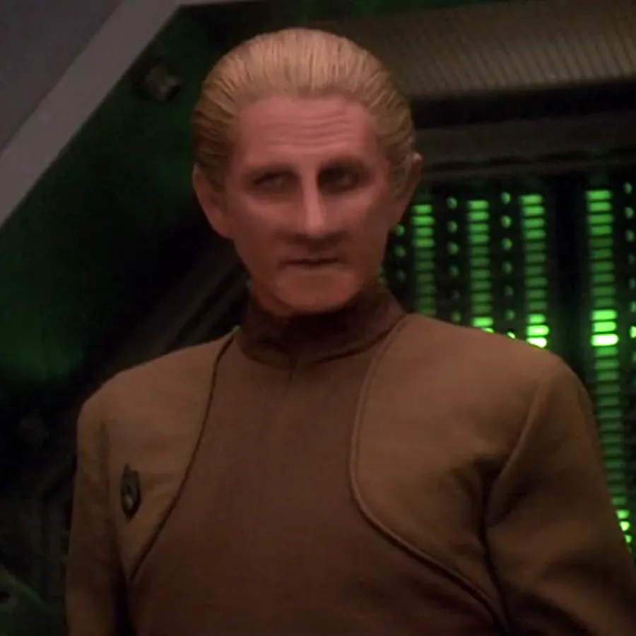
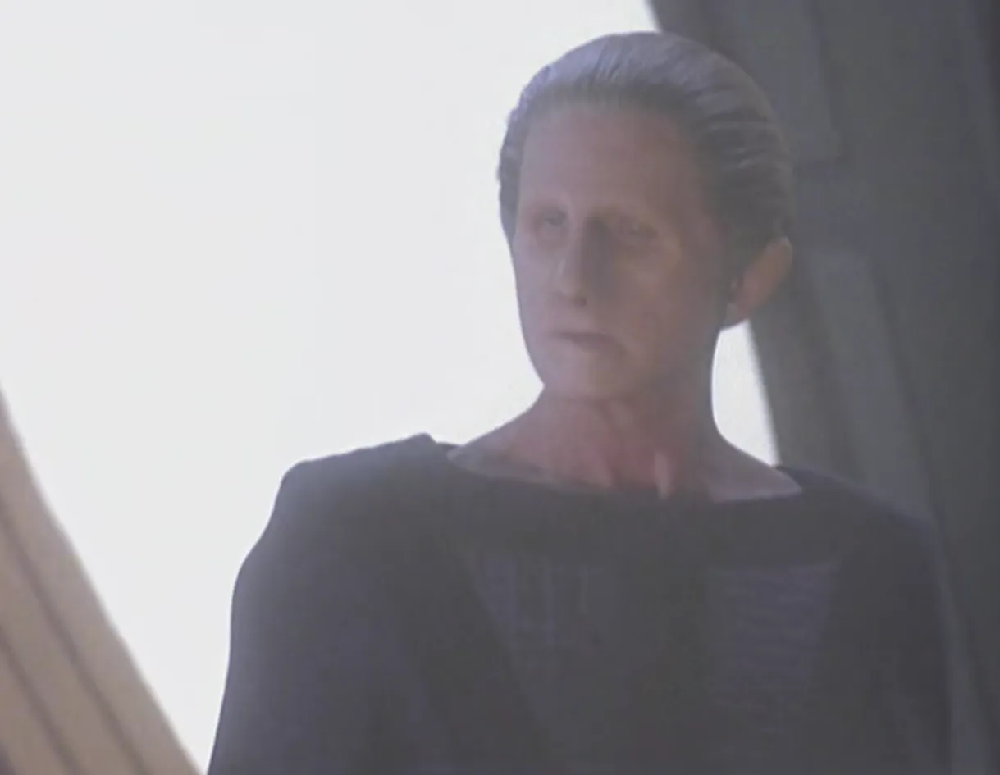
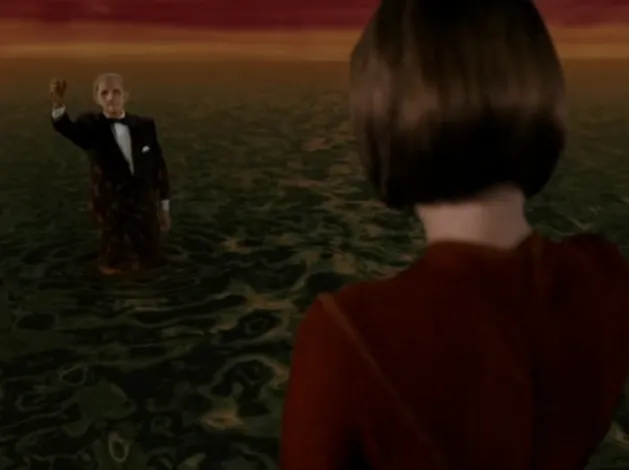

@c6reviews.
@c6reviews.| Odo | |
|---|---|
 |
|
| Played by: | René Auberjonois |
| Primary Series: |  Seasons 1-7 |
| Also played by: |
Salome Jens (in disguise as the female Changeling in DS9 7x22: Tacking into the Wind)
|
Early Life
Odo “newly-formed”
In an unknown year “centuries ago”, Odo was one of a hundred newly-formed Changelings that were sent out into the galaxy to grow and explore, though at this time he did not have a name.
Centuries pass
2337*
Odo discovered adrift in the Denorios belt
Not knowing how to shapeshift at this time in his life, Odo remained in his gelatinous state upon his discovery.* The year 2337 is uncertain, and is based on an apocryphal deleted scene from DS9 1x01/02: Emissary
2337-2343*
Odo studied by Doctor Mora Pol
Odo was studied by Mora Pol for seven years at the Bajoran Institute of Science. It took time before Dr. Mora even knew that Odo was a lifeform. The gelatinous substance was labeled with the Cardassian word for “nothing”, Odo'ital, which would later become the source of Odo's name.* These years are uncertain, and are based on an apocryphal deleted scene from DS9 1x01/02: Emissary
2345–2364
(20 years)
(20 years)

Odo recruited by Gul Dukat to investigate a murder
During the Cardassian occupation of Bajor, Odo was recruited by Gul Dukat to investigate the murder of a Bajoran on the Terok Nor space station. Odo's commitment to neutrality and justice earned him a respected position of Chief of Security on the station under the Cardassians.DS9 2x08: Necessary Evil

Odo allows three innocent Bajorans to die
Investigating a bombing intended to kill Gul Dukat, Odo convicted three Bajorans on circumstantial evidence. He was too concerned with maintaining order, which meant that he didn't see evidence that would have exonerated them.DS9 5x08: Things Past
Odo catches the eye of Ambassador Lwaxana Troi
Some time after the change in administration of Deep Space Nine from the Cardassians to the Federation, Odo has remained Chief of Security and is pursued by the Betazed ambassador.DS9 1x17: The Forsaken
Odo investigates his origins with Dr. Mora Pol
Still desperate to learn anything about his origins, Odo accompanies Dr. Mora Pol on a mission to a planet where other Changelings may have lived.DS9 2x12: The Alternate

Odo finds his people
While traveling in the Gamma Quadrant, Odo feels drawn to explore to Omarion Nebula. There, he finds a rogue planet inhabited by Changelings just like himself.DS9 Season 3 Spoiler » After visiting with his people for some time, Odo is shocked to learn that the Changelings are actually the mysterious “Founders” at the heart of the Dominion.
DS9 3x02: The Search, Part II
After contracting an unknown ailment, Odo returns to his people
With Dr. Bashir unable to help, Odo has no choice but to return to the Changeling homeworld in hopes that his people can cure him.DS9 4x26: Broken Link Spoiler » When he meets with the female Changeling, he learns that his illness was actually caused by the Founders: they wanted him to come home to be judged for harming another Changeling. As punishment, the Founders turn Odo into a solid.
DS9 4x26: Broken Link
Odo and Dr. Mora care for an “infant” Changeling
Odo objects to Mora Pol's methods and is determined to raise this Changeling with a gentler hand.DS9 5x12: The Begotten Spoiler » Though the infant Changeling did not survive, its final act was to merge with Odo, turning him back into a Changeling after the Founders had turned him into a solid.
DS9 5x12: The Begotten

DS9 Finale Spoiler »
Odo Agrees to Return Home in Exchange for the Founders Ending the War
With the Great Link suffering from a deadly illness, the Changelings agree to put an end to the war, and Odo agrees to return to the Great Link to heal his people.Odo Agrees to Return Home in Exchange for the Founders Ending the War
DS9 7x25: What You Leave Behind
2376–2400
(25 years)
(25 years)
PIC Season 3 Spoiler »
Odo Warns Worf about a group of rogue Changelings
Though not depicted on screen, Worf tells us that Odo alerted him to a group of Changelings breaking off from the Great Link to seek revenge against the Federation.Odo Warns Worf about a group of rogue Changelings
PIC 3x03: Seventeen Seconds